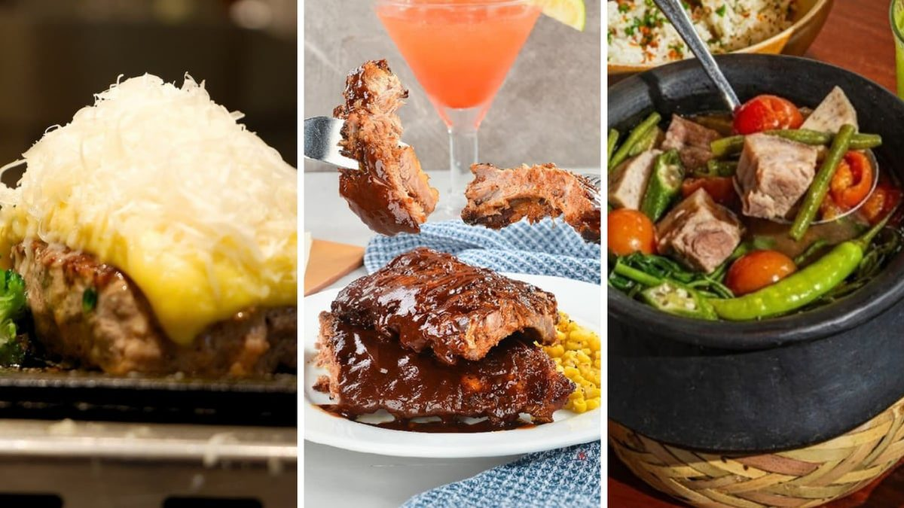
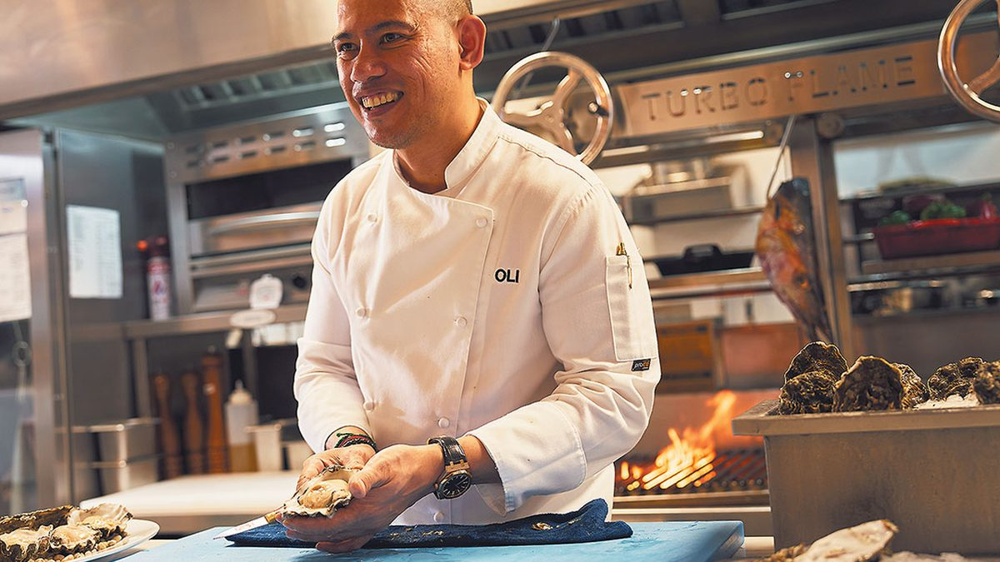
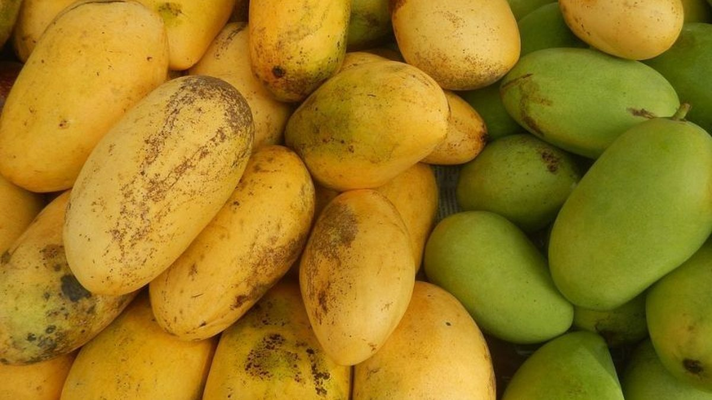

Chili’s lands Iloilo; SM Cebu queues Filipino + Japanese FOHO
22–26 Sep 2026
Chili’s Grill & Bar opened its first Iloilo branch — and first Visayas door — on the second level of SM City Iloilo on Sep 22, Homes.ph and Tribune report. It is the brand’s 27th Philippine store, bringing Baby Back Ribs, Big Mouth Burgers, fajitas, and a full bar into Western Visayas without a ferry hop to Luzon. The same SM pipeline is not stopping at Tex-Mex: George & Onnie’s (modern Filipino comfort, family recipes, share plates) and Niku Niku Oh!! Kome (Japanese beef hamburg steaks grilled in front of diners, served with Japanese rice) are set for their VisMin debuts at SM City Cebu. SM says its tenant footprint grew 4% in H1 2026 to more than 23,000 nationwide, with food, leisure, and lifestyle among the demand drivers. Operator read for Calamba: this is regional mall densification, not a South Luzon vacancy signal. Chili’s, George & Onnie’s, and Niku Niku are betting Iloilo and Cebu can carry mid-casual ASP before another Nuvali fill. Your weekday fight stays Nuvali Central Bloc / SM Sto. Tomas grocery-and-office traffic; treat Visayas FOHO opens as proof that SM will keep loading dining into growth cities — useful if you ever franchise south, useless if you use it to excuse a Calamba rent that still needs a weekday ticket.
Open Tribune · Open Homes.ph

Seafood 8: eight sauces, named ports, cut the middleman
23 Sep 2026 (BusinessWorld); soft open Aug 8
Seafood 8 by Olio’s on the ground floor of Gateway Mall 2 in Araneta City is chef Oliver “Oli” Buenviaje’s first restaurant in the Philippines — a dampa concept where guests point at iced catch, pick grill/steam/fry/bake, then dress it with one of eight sauces (Kalamansi Hollandaise, Chili Caramel, Asian Sweet and Sour, Olio’s Chili Supreme XO, Miso Butter, Inasal Citrus Ginger & Soy, Latin Chimichurri, Gambas Roja). BusinessWorld’s Sep 23 tasting notes GenSan tuna belly with chimichurri, Batangas tiger prawns with miso, lobster with calamansi hollandaise dusted in tinapa powder. Buenviaje’s line that matters for operators: “The only way to price cheaper and more affordably here is to source directly, not just in a market area… Naming where it comes from is to honor where this seafood comes from.” CV: Sorsogon roots, Australia as a teen, Le Meurice (Alain Ducasse), Al Mahara at Burj Al Arab, Caprice at Four Seasons HK, then Olio’s Fine Food Catering in Perth. Soft open Aug 8; grand open mid-September. Operator read: this is the Insider-style protein story for wet fish — process and offtake before theater. For a Calamba commissary or grill station, steal the lever order (direct buy → named origin → sauce system that scales), not the Gateway rent. If your bangus or prawn special still clears through three middlemen, Seafood 8 is pricing you out of the story even if they never open in Laguna.
Open BusinessWorld

Second Carabao mango line hits Vancouver — weekly cadence
18–21 Sep 2026
Philstar / DA: Mensch FilAm Corp. flew one metric ton of Carabao mangoes (250 cartons) to Vancouver on Sep 18 for distributor Fresh Makers Ltd. — the second Philippine exporter into Canada after the June pioneer ton from Hi-Las Marketing and Castillo Import Export Ventures into Toronto (TSI Tropicals). The Philippine Consulate in Vancouver says the June chain already put 100 cases into T&T Supermarket in the Vancouver area on Sep 9; Mensch FilAm’s path is weekly into Greater Vancouver and Pacific Asian retail, with central and eastern Canada next. Domestic backdrop (DOST-PCAARRD / PSA): ~710,000 MT mango production in 2025, about 92% eaten at home; the export slice still leans Hong Kong, South Korea, and Japan. Sec. Tiu Laurel frames the flight as part of opening new farm-export markets. Parallel DTI track still live: revised JPEPA talks aim to cut Japan’s 8–18% banana duties toward zero by a November close — PH shipped nearly 3 MMT fresh bananas last year and sits #2 globally after Ecuador. Operator read for Calamba: export premium and kitchen spike can move together. PSA’s early-September print already had carabao mango near ₱183/kg (+17% MoM). A weekly Vancouver offtake does not empty Luzon wet markets overnight, but it is a second commercial buyer competing for peak-season kilos. If you plate mango desserts or beverages into Q4, lock supplier volume now and don’t assume “92% domestic” means unlimited local fruit at last year’s price.
Open Philstar / mango Canada · Open Philstar / banana JPEPA